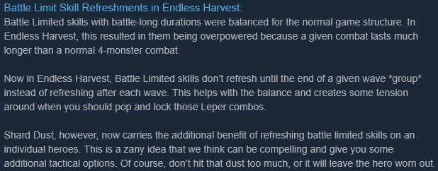

Darkest Dungeon: Build #24353
El día Miércoles 15 de Agosto del presente, se hizo público mediante el portal de Steam (al menos por ahí me enteré yo) la liberación de la build #24353 del juego bandera de este blog, ni más ni menos que Darkest Dungeon.

Dicha build probablemente pasaría desapercibida, de tratarse claro de un pack de reparación de bugs y errores (que también tiene algo de eso).
Sin embargo como se puede apreciar en la imágen de la noticia, la mencionada build contiene como principal contenido ajustes significativos de balance, para la misión conocida como la Cosecha Interminable.
Antes que nada les dejo a los que esten interesados, el link oficial de la publicación en Steam. Y ahora procederé a hacer un resumen de los puntos que considero personalmente más relevantes.

Pues bien, lo que nos quiere decir esta imágen es que una vez hayamos vencido 200 esbirros dentro de la Cosecha Interminable, el juego entrará, por así decirlo en modo difícil (no creo que como Stigian, pero eso habrá que comprobarlo), siendo parte de este cambio una nueva mecánica de condición llamada Reflection.
Además de los debuffs (en su mayoría) que se muestran para cada condición, cabe destacar que estas condiciones son stackeables con los colores propios de la sala en cuestión. Lo cual podría significar por ejemplo, que si un héroe llega con el medidor de stress en 50, con suficiente mala suerte, el stress propio de la sala y la condición Unbeareable Reflection, el héroe sea puesto a prueba sin muchas complicaciones.

Por último, pero no por eso menos importante, algo que se veía venir a lo lejos, el reajuste a las habilidades de batalla dentro de la misión de la Cosecha Interminable
En misiones convencionales no se sentía demasiado lo OP que estaban las habilidades de batalla, pero aquellos que hayan tenido oportunidad de ver los videos de la guía que hice, se habrán dado cuenta que dentro de la Cosecha Interminable se podía abusar mucho de estas habilidades, un ejemplo eran: Refuerzo del Hombre de Armas o Disparo de seguimiento del Bandolero, ambas habilidades buenísimas tanto defensiva como ofensivamente.
Visto lo dicho en el párrafo anterior, procederé a detallar las habilidades que recibieron modificaciones en esta build:
- Abominación - Transformación (2 usos)
- Asaltatumbas - Artimañas tóxicas (1 uso)
- Bandolero - Disparo de seguimiento (1 uso)
- Bufón - Apoteosis (1 uso), Solo (2 usos)
- Cruzado - Baluarte de fé (1 uso)
- Flagelante - Desangrar (3 usos), Redención (2 usos)
- Hombre de Armas - Refuerzo (1 uso)
- Leproso - Aguante (1 uso), Venganza (1 uso)
- Médico de la peste - Vapores del coraje (2 usos)
- Rompescudos - Influjos de serpiente (2 usos)
Pues bien, el reajuste como tal, consiste en que antes de esta build los skills mencionados refrescaban su reutilización después de cada oleada de enemigos. Aparentemente a partir de esta build estas habilidades se refrescaran después de vencer a todo un grupo de enemigos.
Pero no todo es tristeza, ya que: "Lo que Red Hook quita, Red Hook lo compensa" (muy a su modo), y esta vez han añadido una nueva mecánica dentro de lo que es el Polvo de Fragmento. La nueva mecánica consiste en que ahora el mencionado objeto permitirá refrescar la utilización de una habilidad de batalla. Esto parece que no, pero es un buff indirecto para ciertas clases, ya que por ejemplo en el caso particular del Bufón, podría permitirnos usar una cantidad muy alta de veces Apoteosis (quizá nunca sea la misma del juego base, pero por algo se empieza) en una batalla contra un boss por ejemplo.
Si no quieres ver todo el video, los últimos 2 minutos muestran al todopoderoso Bufón de la nueva Build
Por el momento dejo las guías de la build anterior (creo que al menos la mía, es aún algo viable), pero en cuanto haya testeado un poco esta build nueva, no duden que sugeriré al menos una nueva composición y con suerte pueda elaborar un nuevo video de gameplay. Saludos y hasta otra, se despide El Mayu.